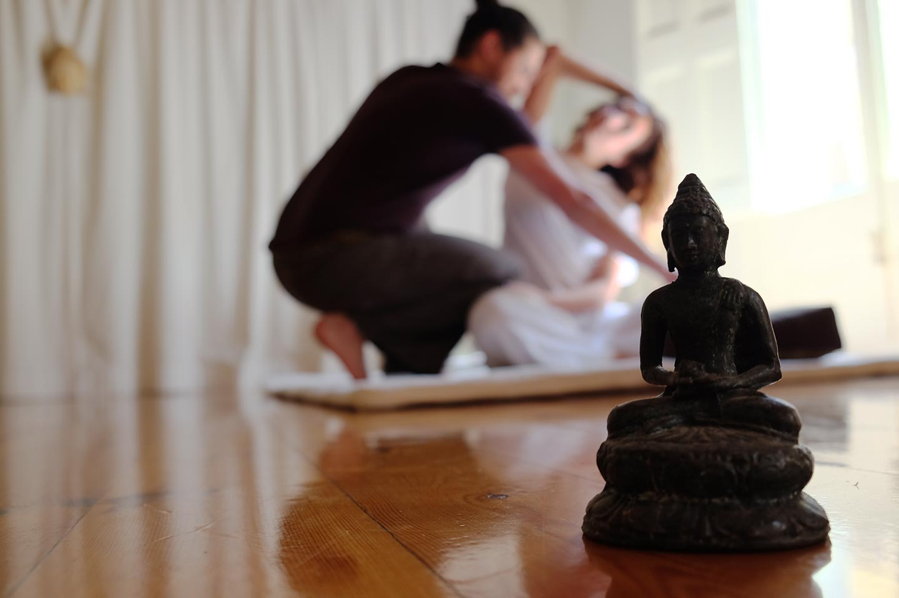

En esta sección podréis encontrar mucha información relevante al masaje tailandés. Se intentará abordar las dudas más frecuentes como información detallada del masaje tailandés y de manera escueta y clara. Se abordará: orígenes, tratamiento, beneficios, objetivos y las contraindicaciones del masaje tailandés.
INFLUENCIAS Y LOS 5 ESTADIOS
Orígenes
Los orígenes del masaje tailandés son muy interesantes ya que tiene varias influencias que enriquecen su bagaje cultural. Esto se debe a su antiguedad, que se encuentra en los 2500 años de antiguedad. Las influencias que han propiciado la creación de este arte se podrían separar en cinco estadios.
TEXTOS MÉDICOS
Buddhismo
Varios textos médicos tailandeses han incorporado doctrinas sobre el cuerpo, enfermedades y tratamientos curativos derivados de textos budistas. Estos textos provienen de los últimos siglos antes de Cristo. Por ello esta disciplina se le puede considerar milenaria.
PROXIMIDAD GEOGRÁFICA
Ayurveda
Debido a la proximidad geográfica el masaje tailandés tiene muchas influencias de India. Por ello, el masaje tailandés recibe influencia de ideas médicas ayurvédicas, como el resto de Asia a través de los canales religiosos.
LUESII DAT DON
Yoga
Una influencia muy notable y obvia proviene del Yoga. La forma más conocida y extendida en occidente del yoga es el hatha yoga. Sin embargo en Tailandia existe otro sistema de posturas que es bastante similar, el llamado luesii dat don. Esta disciplina ha influido mucho el masaje tailandés y en gran manera marcado mucho el estilo del masaje.
INTERCAMBIO CULTURAL
Culturas Chinas y otras culturas
El masaje tailandés también ha recibido influencia de otras culturas como la Khmer o y en gram medida la cultura China, debido a un largo periodo de intercambio cultural. El masaje tailandés ha absorbido y modificado partes de la reflexología podal, masaje abdominal tuina y de otras prácticas corporales chinas. Por esa razón existe grandes similitudes en sus técnicas de acupresión como entre las líneas sen tailandeses y los meridianos chinos.
ARTES SANADORAS AUTÓCTONAS
Medicina autóctona tailandesa
Como último y como influencia más evidente son las prácticas curativas tailandesas de todo tipo. Tailandia es un país muy diverso y por ello el paso de los años ha creado que el masaje tailandés incorporase artes sanadoras autóctonas. Por ejemplo el yam kaeng (caminar sobre la espalda), colocación de huesos (técnica quiropráctica) o el took sen (Golpes en puntos concretos con una maza de madera) son algunos ejemplos.

ACUPRESIÓN Y ESTIRAMIENTOS
Tratamiento
El tratamiento consiste en una combinación de acupresión y estiramientos al estilo Yoga. Este masaje se diferencia de en gran medida de lo que se entiende por masaje en el mundo occidental. El masaje no sólo es relajante pero el cuerpo es estirado, retorcido y activa el sistema energético del cuerpo humano. Hay tres diferencias esenciales:
El masajista presionará en puntos concretos para obstruir y recanalizar las líneas sen (Líneas de energía que si se bloquean pueden producir problemas o molestias). Hay 72.000 líneas sen aunque generalmente en la práctica se ejercita sobre 10 de ellas.
Simultáneamente el masajista manipulará el cuerpo del cliente para realizar determinados posiciones y estiramientos. Los estiramientos y las contorsiones que el masajista realiza al cliente tiene muchas correlaciones con el yoga. Por ello el tratamiento se podría describir correctamente como yoga pasivo.
Ausencia de aceites
Se utiliza un colchón en el suelo
El cliente permanece vestido.
GLOBALMENTE POSITIVO
Beneficios
Los beneficios del masaje son varios y muchos son globalmente muy positivos para el paciente. El masaje tailandés mejora la circulación (Trabajando sobre las líneas de energía), flexibilidad y el tono muscular (A través de diversos estiramientos).
En el plano clínico se ha hecho patente que el masaje tailandés puede prevenir de la degeneración del tejido óseo, reducir el estrés, tratar el dolor de la espalda y contribuir al bienestar psicológico.
Adicionalmente la mezcla de acupresión y estiramientos es beneficioso para quien se siente dolorido o cansado por trabajo demasiado o por la práctica del deporte o para una persona con un trastorno de movilidad.
Eso si, hay que tener en cuenta que el masaje tailandés tiene sus limitaciones. En casos en que los órganos internos sufren de alguna infección, heridas crónicas o condiciones degenerativas no hay pruebas que el masaje tailandés solucione estos problemas. La función más importante del masaje consiste en estimular la energía corporal y el proceso de la sanación natural. Debido a esto puede ser una gran terapia complementaria, pero nunca ha de ser el único tratamiento ante enfermedades serias.
EQUILIBRAR LA ENERGÍA CORPORAL
Objetivos
El objetivo del masaje tailandés es estimular la energía corporal. En caso de que el paciente tenga algún bloqueo en alguno de los puntos sen el resultado después de un masaje tailandés debería desbloquearlo removiendo el malestar.